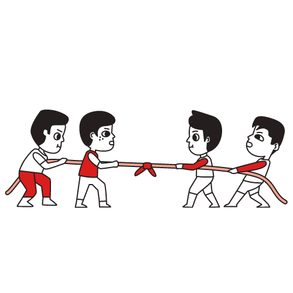
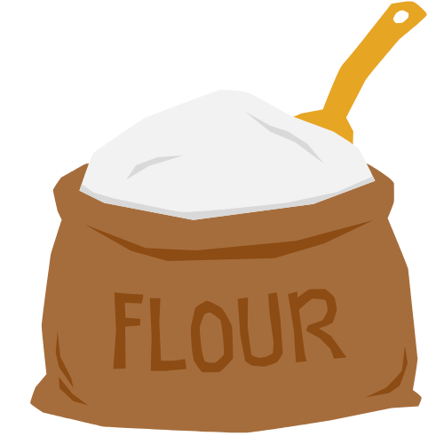
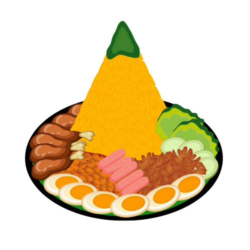

Lomba di Smanda
Balap Karung
Permainan balap karung adalah sebuah permainan yang melath kelincahan.
Lihat detail....

Tarik Tambang
Permainan tarik tambang adalah permainan yang melatih kekompakan team
Lihat detail....

Lempar Tepung
Permainan lempar tepung adalah permainan yang melatih kekompakan team
Lihat detail....

Hias Tumpeng
Hias tumpeng adalah perlombaan menghias tumpeng dengan tema kemerdekaan
Lihat detail....